Hầu hết mọi nhân vật phản diện trong Naruto đều là hóa thân của hoàn cảnh của họ, chính điều này đã tạo nên một tác phẩm truyện tranh có chiều sâu. Tuy nhiên, Kishimoto cuối cùng đã biến quá nhiều nhân vật phản diện của mình quay xe trở thành người tốt . Dưới đây là top 11 Kẻ phản diện quay xe về team người tốt trong Naruto.
11. Toneri Otsutsuki
Toneri được giới thiệu trong The Last: Naruto the Movie. Khá rõ ràng rằng nhân vật phản diện này sẽ cực kỳ mạnh mẽ. Được biết anh ta mang dòng máu của Otsutsuki và là hậu duệ trực tiếp của Hamura, anh ta chắc chắn sẽ là mối đe dọa lớn đối với những người như Naruto và thế giới shinobi nói chung. Toneri thâm nhập vào Konoha và thậm chí còn bắt cóc Hanabi.
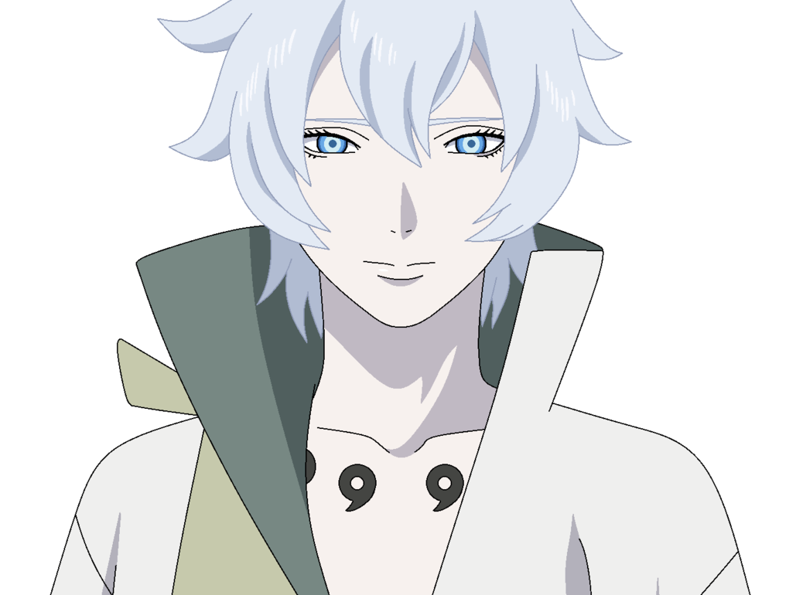
Tệ hơn nữa, Hinata còn là tù nhân của anh trong một thời gian khá dài vì anh muốn cưới cô. Hơn hết, cuối cùng anh ta muốn phá hủy toàn bộ Trái đất và bắt đầu lại cuộc sống từ đầu. Tuy nhiên, Naruto cuối cùng đã tha thứ cho anh ấy và anh ấy cũng trở thành một chàng trai tốt. Điều này thực sự kỳ quái và lẽ ra Naruto không nên tự mình đưa ra quyết định này. Toneri có tiềm năng lớn trở thành một nhân vật phản diện và lẽ ra anh ta phải chết như một kẻ phản diện.
10. Sasuke Uchiha
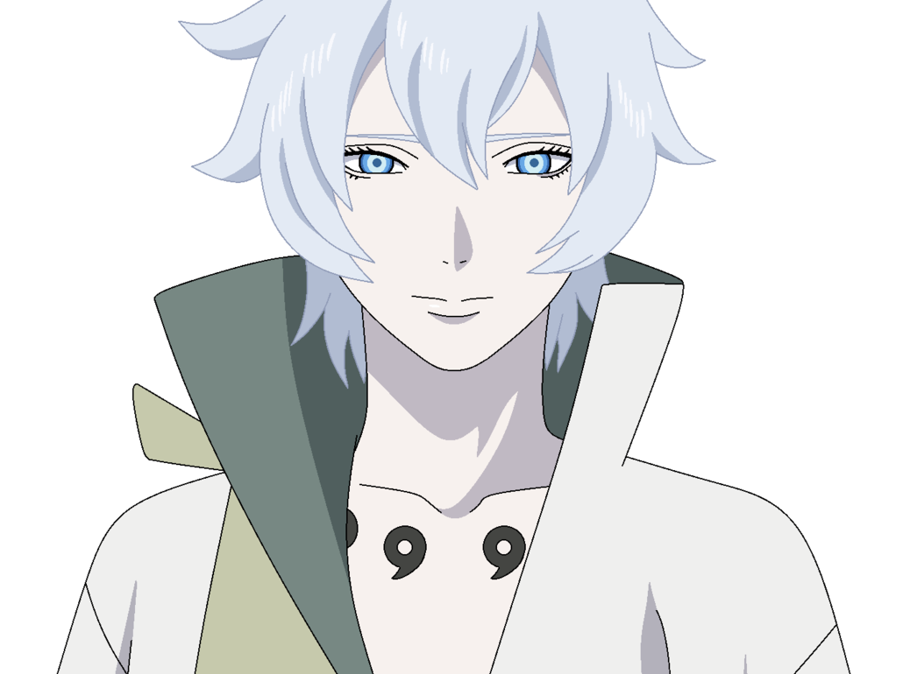
Tệ hơn nữa, Hinata còn là tù nhân của anh trong một thời gian khá dài vì anh muốn cưới cô. Hơn hết, cuối cùng anh ta muốn phá hủy toàn bộ Trái đất và bắt đầu lại cuộc sống từ đầu. Tuy nhiên, Naruto cuối cùng đã tha thứ cho anh ấy và anh ấy cũng trở thành một chàng trai tốt. Điều này thực sự kỳ quái và lẽ ra Naruto không nên tự mình đưa ra quyết định này. Toneri có tiềm năng lớn trở thành một nhân vật phản diện và lẽ ra anh ta phải chết như một kẻ phản diện.
10. Sasuke Uchiha
Là một trong những nhân vật chính trong Naruto, ai cũng biết rằng Sasuke cuối cùng sẽ lại trở thành một người tốt. Cậu ta đã đóng vai một nhân vật phản diện trong phần lớn bộ truyện và đã làm những điều không thể diễn tả được trong thời gian này. Sasuke có thể là một trong những nhân vật phản diện độc ác nhất trong toàn bộ Naruto, xét theo hệ tư tưởng và những gì anh ta muốn đạt được. Anh ta đã gây ra nỗi đau cho khá nhiều ngôi làng cũng như cho cả bạn bè của mình.
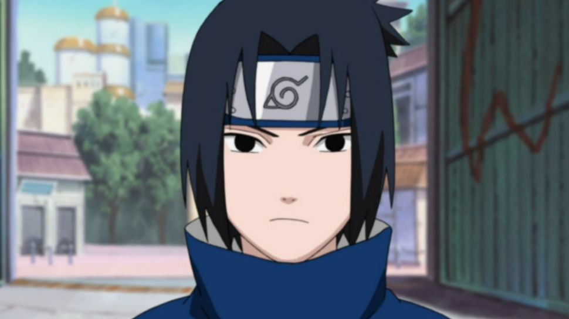
Sasuke đã làm những điều không thể diễn tả được trong cuộc chiến, chẳng hạn như lên kế hoạch xử tử tất cả các Kage và thậm chí nhốt tất cả các Vĩ thú. Cậu ta thâm nhập vào Hội nghị thượng đỉnh Kage và tấn công Raikage. Với tất cả những gì cậu đã làm, Sasuke lẽ ra không được tha thứ chút nào. Cuối cùng, Kakashi là người nói hộ cho Sasuke và mọi người "quên" mất tất cả những gì Sasuke đã làm. Trên thực tế, lẽ ra Sasuke không đáng được tha thứ và Naruto cần phải chiến đấu với Sasuke như một kẻ phản diện.
Tuy nhiên như vậy thì chúng ta đã có 1 Sasuke như hiện nay đúng không?
9. Orochimaru
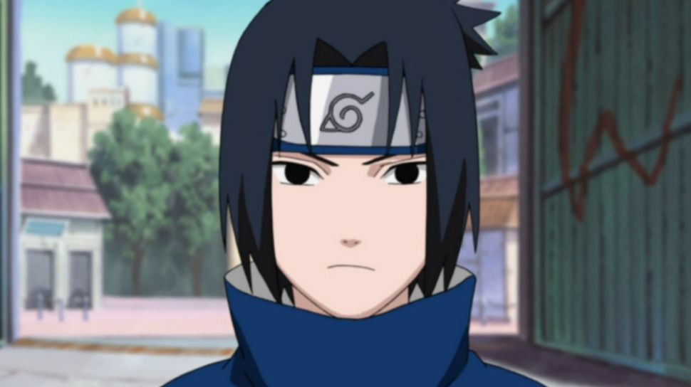
Sasuke đã làm những điều không thể diễn tả được trong cuộc chiến, chẳng hạn như lên kế hoạch xử tử tất cả các Kage và thậm chí nhốt tất cả các Vĩ thú. Cậu ta thâm nhập vào Hội nghị thượng đỉnh Kage và tấn công Raikage. Với tất cả những gì cậu đã làm, Sasuke lẽ ra không được tha thứ chút nào. Cuối cùng, Kakashi là người nói hộ cho Sasuke và mọi người "quên" mất tất cả những gì Sasuke đã làm. Trên thực tế, lẽ ra Sasuke không đáng được tha thứ và Naruto cần phải chiến đấu với Sasuke như một kẻ phản diện.
Tuy nhiên như vậy thì chúng ta đã có 1 Sasuke như hiện nay đúng không?
9. Orochimaru
Orochimaru có thể là nhân vật phản diện đáng sợ nhất trong Naruto trong phần đầu tiên của bộ truyện. Anh ta không chỉ chịu trách nhiệm khiến Sasuke rời làng mà còn tấn công Konohagakure và giết chết Hiruzen Sarutobi. Anh ta cũng giết Rasa, Kazekage đệ tứ.
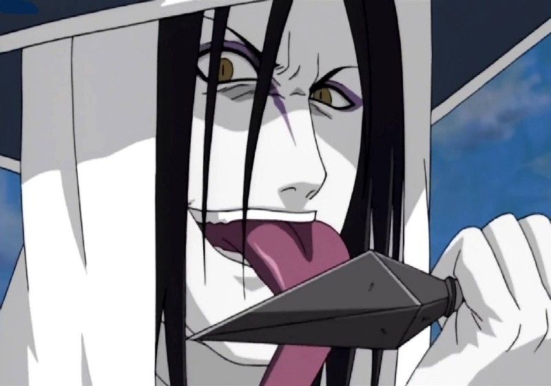
Orochimaru là một nhân vật phản diện ấn tượng vì đối với hắn, việc chuộc lỗi chưa bao giờ thực sự có ý nghĩa gì. Tuy nhiên, trong Đại chiến Ninja lần thứ tư, bằng cách nào đó anh đã được cứu và cuối cùng anh cũng từ bỏ ước mơ của mình. Với góc nhìn Orochimaru đáng được khai thác nhiều hơn thế
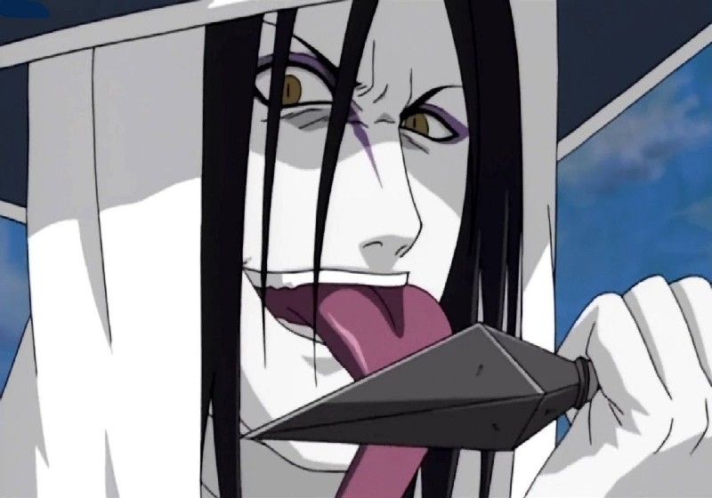
Orochimaru là một nhân vật phản diện ấn tượng vì đối với hắn, việc chuộc lỗi chưa bao giờ thực sự có ý nghĩa gì. Tuy nhiên, trong Đại chiến Ninja lần thứ tư, bằng cách nào đó anh đã được cứu và cuối cùng anh cũng từ bỏ ước mơ của mình. Với góc nhìn Orochimaru đáng được khai thác nhiều hơn thế
8. Kabuto Yakushi
Mặc dù, Kabuto Yakushi đã từng là cánh tay phải của Orochimaru, tuy nhiên, sau khi Sasuke giết hắn, Kabuto đã tự mình trở nên mạnh mẽ hơn. Bằng cách đạt được sức mạnh to lớn, anh ta đã trở thành một trong những nhân vật phản diện chính trong câu chuyện.
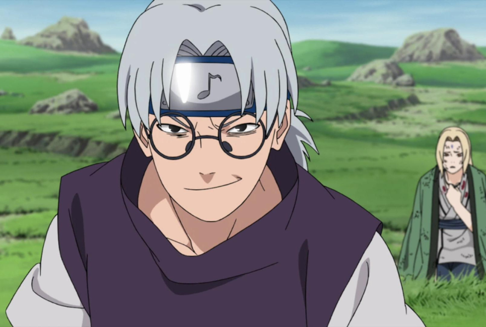
Kabuto chịu trách nhiệm nặng nề cho Đại chiến Ninja lần thứ tư chứng kiến hàng chục nghìn shinobi thiệt mạng. Tuy nhiên, cuối cùng anh đã được Kishimoto tha thứ. Kabuto đã cứu mạng Sasuke nhưng lẽ ra điều đó thật quá ư là vô lý đối với tính cách của hắn.
7. Gaara
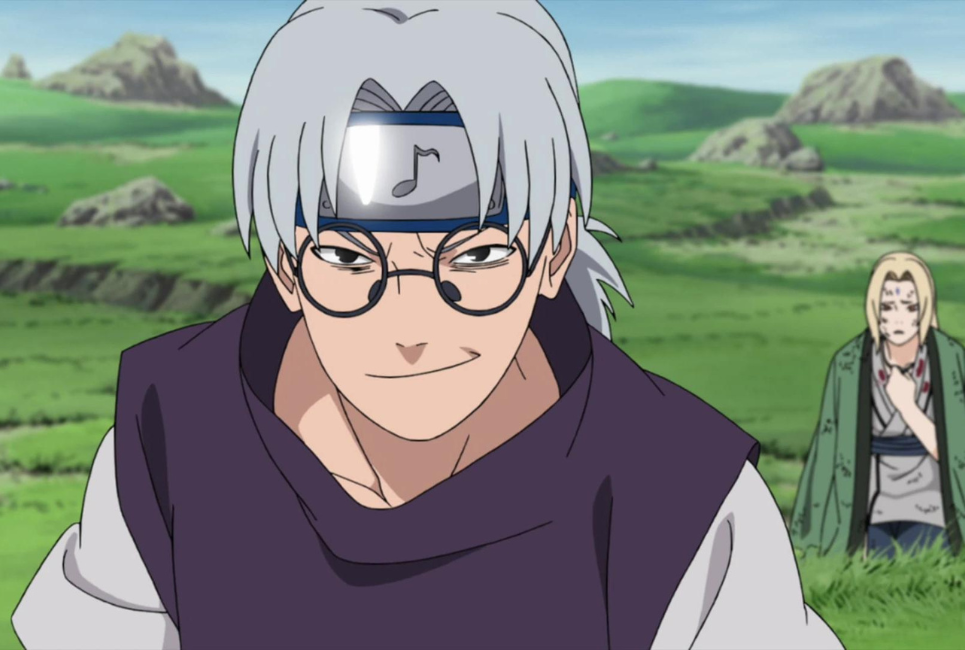
Kabuto chịu trách nhiệm nặng nề cho Đại chiến Ninja lần thứ tư chứng kiến hàng chục nghìn shinobi thiệt mạng. Tuy nhiên, cuối cùng anh đã được Kishimoto tha thứ. Kabuto đã cứu mạng Sasuke nhưng lẽ ra điều đó thật quá ư là vô lý đối với tính cách của hắn.
7. Gaara
Gaara là một nhân vật rất quan trọng trong Naruto và là một trong những Kage của làng Cát. Anh bắt đầu cuộc hành trình của mình trong bộ truyện với tư cách là một nhân vật phản diện. Gaara khá đáng sợ và thậm chí còn cho Naruto chạy đua lấy tiền. Trên thực tế, anh ta có thể tự mình phá hủy toàn bộ Konoha và chỉ điều đó thôi cũng là dấu hiệu cho thấy anh ta có thể trở thành một nhân vật phản diện đáng sợ như thế nào nếu Kishimoto đơn giản để anh ta trở thành một kẻ như vậy. Tuy nhiên, Gaara cuối cùng đã được Naruto cảm hóa trở thành người tốt sau khi cả hai kết nối với nhau sau trận chiến của họ.
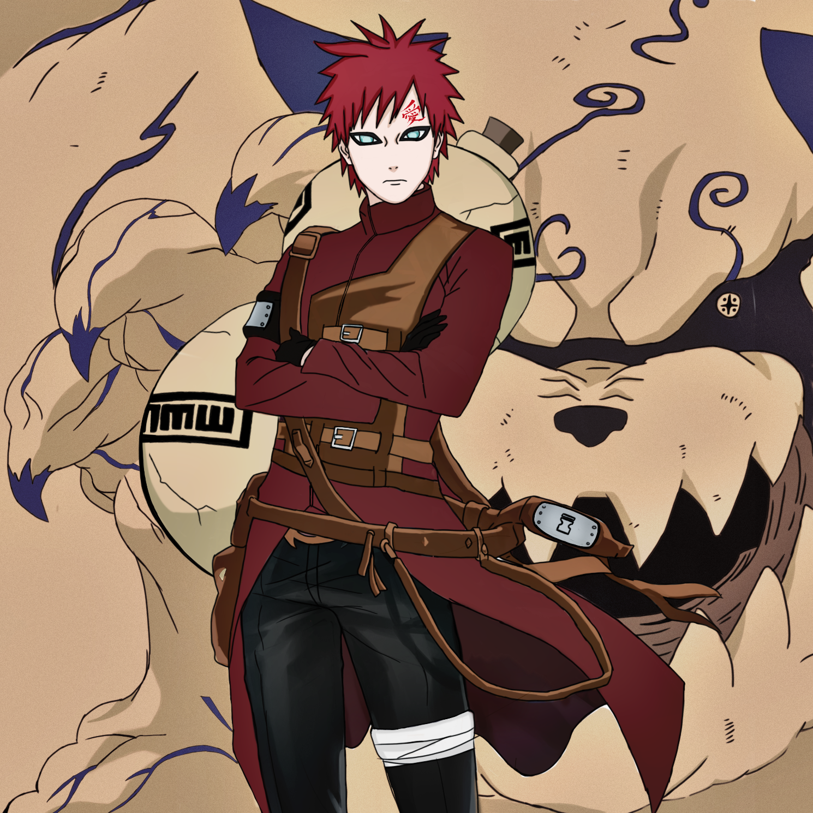
Đây không hẳn là một thay đổi xấu. Gaara là một trong những trường hợp nhân vật phản diện trở thành người tốt được Kishimoto thực hiện.
6.Itachi Uchiha
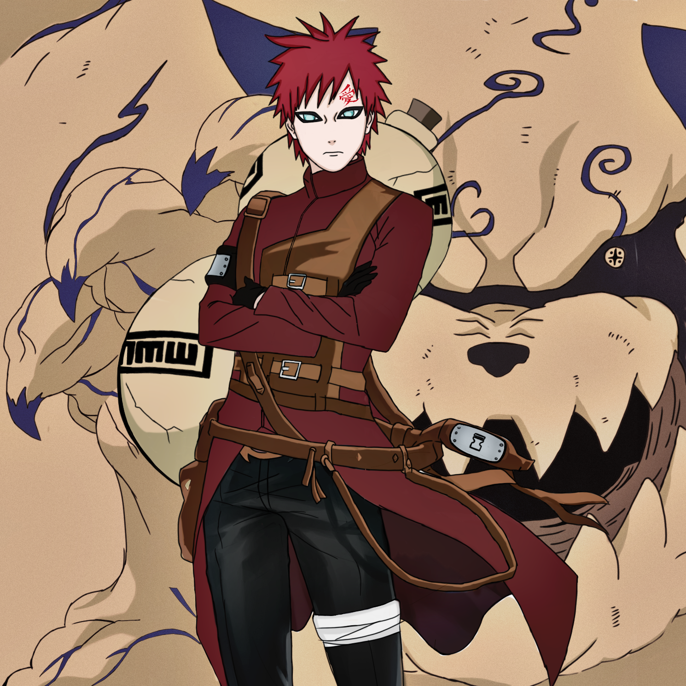
Đây không hẳn là một thay đổi xấu. Gaara là một trong những trường hợp nhân vật phản diện trở thành người tốt được Kishimoto thực hiện.
6.Itachi Uchiha
Itachi được giới thiệu trong câu chuyện là một nhân vật phản diện đã sát hại toàn bộ gia tộc của mình chỉ trong một đêm chỉ để kiểm tra sức mạnh của mình. Anh ta là mục tiêu của Sasuke và khá dễ dàng có tiềm năng trở thành một trong những nhân vật phản diện xuất sắc nhất trong toàn bộ bộ truyện. Và cuối cùng bằng một plot twist, Itachi cuối cùng được tiết lộ là người tốt từ trước đến nay.
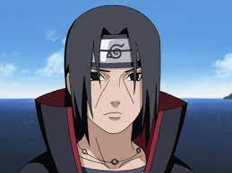
Mặc dù câu chuyện của anh ấy chắc chắn được viết đủ hay, nhưng Itachi được cho là sẽ trở thành một nhân vật phản diện hay hơn nhiều nếu anh ấy giữ đúng tính cách ban đầu của mình. Một lần nữa, thói quen viết lại mọi nhân vật phản diện thành nhân vật tốt của Kishimoto đã giúp Itachi trở thành một chàng trai tốt và thậm chí là một vị cứu tinh trong Đại chiến Ninja lần thứ tư, điều khá đáng ngạc nhiên là anh ta đã tàn sát vô số đàn ông, phụ nữ và thậm chí cả trẻ em vô tội làm những gì anh ta đã làm chỉ trong một đêm.
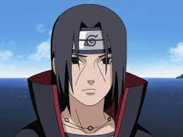
Mặc dù câu chuyện của anh ấy chắc chắn được viết đủ hay, nhưng Itachi được cho là sẽ trở thành một nhân vật phản diện hay hơn nhiều nếu anh ấy giữ đúng tính cách ban đầu của mình. Một lần nữa, thói quen viết lại mọi nhân vật phản diện thành nhân vật tốt của Kishimoto đã giúp Itachi trở thành một chàng trai tốt và thậm chí là một vị cứu tinh trong Đại chiến Ninja lần thứ tư, điều khá đáng ngạc nhiên là anh ta đã tàn sát vô số đàn ông, phụ nữ và thậm chí cả trẻ em vô tội làm những gì anh ta đã làm chỉ trong một đêm.
(còn nữa)